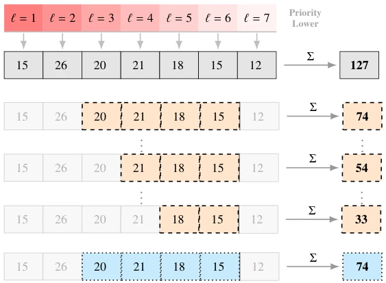
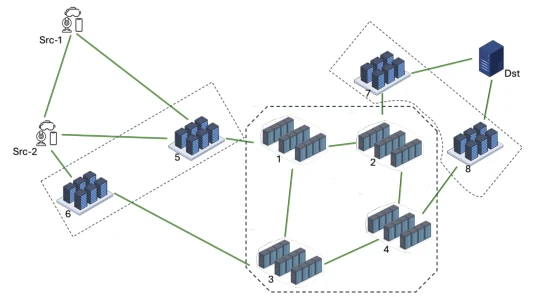
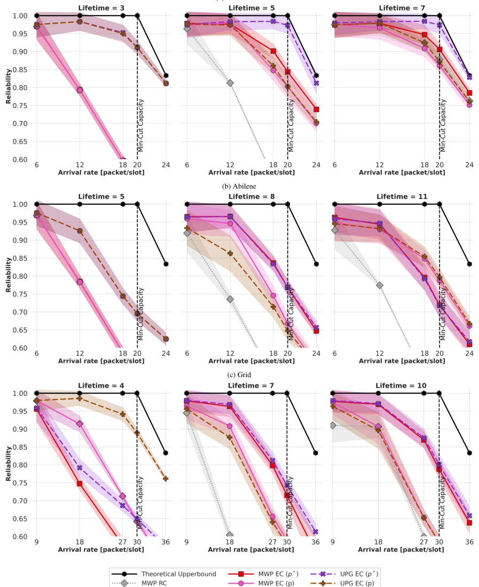
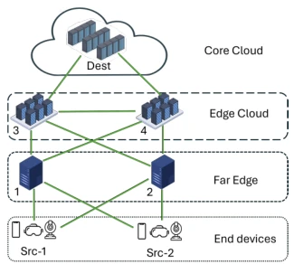
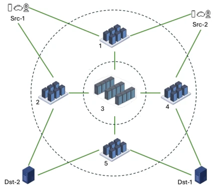
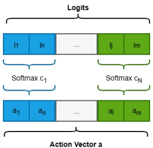
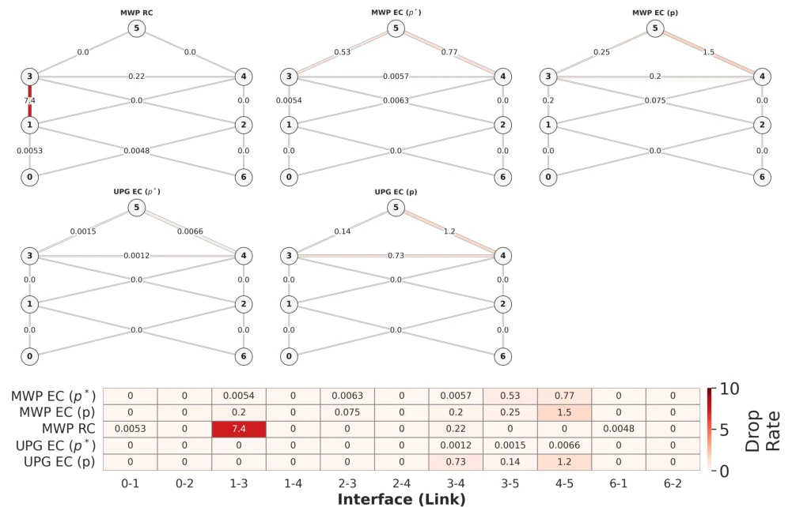
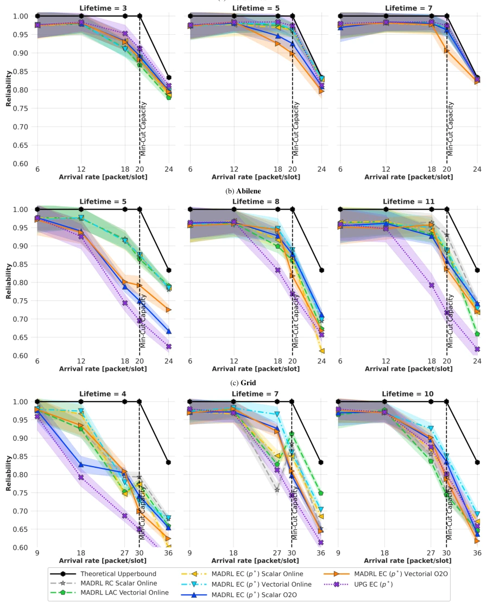
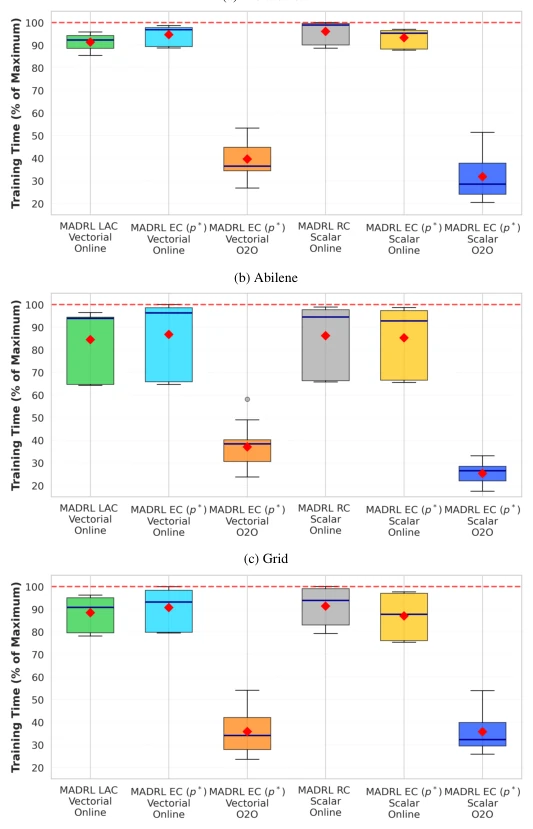

This paper attempts to address network congestion control using reinforcement learning, but essentially it is putting a "deep learning" coat on traditional heuristic algorithms. The EC metric proposed by the authors indeed understands "urgent packets" better than simply counting packet numbers, but the computational overhead is also significant. The MGA-RL training protocol sounds impressive, but it essentially links offline pre-training and online fine-tuning with dynamic weights to avoid the distribution shift of traditional Offline-to-Online. However, this is ultimately network control, still some distance away from true embodied intelligence (robotics); the so-called "Agent" is merely a network node. Experimental results perform well under specific topologies, but how is the generalization? After all, network environments are highly variable; for this method heavily relying on prior heuristics, can it still run in a different scenario?
研究动机Motivation
NextG 应用对端到端延迟要求苛刻，传统基于吞吐量或队列体积的拥塞控制（如 BP, LDP）无法捕捉流量紧迫性，导致急件丢失。虽然基于 DRL 的方法有潜力，但样本效率低、训练时间长，难以部署。Vitale et al. (2025) 提出的 MADRL 框架虽有效，但依赖传统队列指标。Cai et al. (2022b) 的 RCNC 虽考虑了截止时间，但计算复杂度高。现有工作缺乏一种既能感知紧迫性又能加速收敛的训练范式，导致学习策略在实际网络中难以快速落地。
NextG applications have stringent requirements on end-to-end latency; traditional congestion control based on throughput or queue volume (such as BP, LDP) fails to capture traffic urgency, leading to urgent packet loss. Although DRL-based methods have potential, they suffer from low sample efficiency and long training times, making deployment difficult. The MADRL framework proposed by Vitale et al. (2025) is effective but relies on traditional queue metrics. RCNC by Cai et al. (2022b) considers deadlines but has high computational complexity. Existing work lacks a training paradigm that can both perceive urgency and accelerate convergence, making learning policies difficult to deploy quickly in practical networks.

Figure 2: Visual breakdown of the congestion metrics introduced in Section 5, applied to communication interface (4, 5) consistent with the toy network topology reported in Figure 1a. While regular congestion accounts for the entire queue occupancy without considering any path information, EC explicitly differentiates the congestion perceived by each path, resulting in a more precise metric that varies based on both the path’s effective lifetime Lp and transit time T p 4,5. The colored cells indicate packets satisfying the filtering condition T p 4,5 < ℓ≤Lp + T p 4,5: for p2 (Lp = 4, T = 2) packets with ℓ∈{3, 4, 5, 6} are included (orange); for p5 (Lp = 3, T = 3) packets with ℓ∈{4, 5, 6}; for p8 (Lp = 2, T = 4) packets with ℓ∈{5, 6}. The excluded cells (grayed out) illustrate the boundary-
The overall process is divided into three stages: Design EC metric -> Construct heuristic prior -> MGA-RL training. 1. EC Metric: Introduce Effective Lifetime (EL), filter out packets about to expire or with low priority, calculate path-related congestion (EC p-model), and use p* model to simplify state dimensions. 2. Architecture: Hybrid architecture, Distributed LELF scheduler + Centralized DDPG router. 3. Training: Propose Generalized Policy Reward (GPR), unifying Behavior Cloning, Offline/Online RL. MGA-RL protocol uses lightweight heuristic policy for offline pre-training, automatically decays imitation weights during online fine-tuning to prevent Actor-Critic misalignment. 4. Action: Use Grouped Softmax to ensure flow conservation.

Figure 4: The Abilene network topology. This topology presents a challenging environment with het- erogeneous node-centrality levels, asymmetric path distributions (16 paths for one commodity versus 12 for the other), and the largest graph diameter (5 hops). The moderate clustering coef- ficient (0.15) indicates local patterns typical of real networks, creating bottlenecks and congestion points that are difficult to anticipate with simple prior-guided approaches. Consequently, Abilene serves as a good test case for adaptive learning algo- rithms, which can exploit the network’s asymmetric structure to improve overall performance.

Figure 7: Reliability performance comparison of prior-guided approaches on the considered network topologies. The line’s shading indicates the standard deviation (SD).
Simulated in three topologies: Hierarchical, Abilene, Grid. Comparison baselines include traditional volume routing, UMW, RCNC, and pure online DDPG. Metric is delivery reliability. Results show EC strategy improves reliability by 40% compared to traditional routing. MGA-RL reduces online interaction cost by 7 times compared to training from scratch. Vectorial EC state representation achieves the best balance between reliability and cost. Ablation studies show UPG strategy can avoid hotspot formation.

Figure 3: The Hierarchical network topology.

Figure 5: The Grid 3×3 network topology.

Figure 6: Visual representation of the Grouped Softmax activation mechanism. The raw logits are logically partitioned into sub-vectors corresponding to individ- ual commodities (c1, . . . , cN). A Softmax function is then applied independently to each partition. This ensures local flow conservation, meaning the routing probabilities sum to 1 exclusively within each commodity group. The normal- ized segments are finally concatenated to form the global Action Vector a.

Figure 8: Spatial distribution of expired packets for prior-guided approaches on Hierarchical topology with L = 5, b = 18. The top figure reports the dropped packet counts on each edge of the network topology. The bottom figure reports the same information at the interface level in the form of a heatmap. While MWP RC heavily concentrates drops at a few bottleneck interfaces (e.g., 4-5 and 3-4), EC-based approaches distribute the load, with UPG variants effectively eliminating localized hotspots.

Figure 9: Reliability performance comparison of DDPG-based approaches on the considered topologies. The line’s shading indicates the Standard Deviation (SD).

Figure 10: Training time reduction for considered network topologies; Hier- archical 10a, Abilene 10b and Grid 10c. The red diamond denotes the mean training time, while the blue line denotes the median. Reductions are computed as a percentage of the longest wall-clock run on the same topology (dashed red line) and identical hardware. The MGA-RL policies include the full pre-training and online fine-tuning phases.